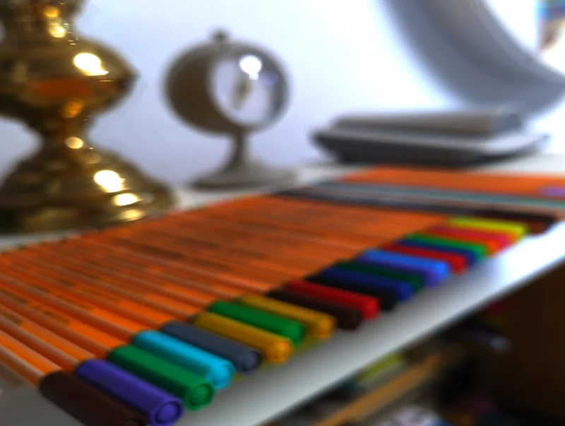
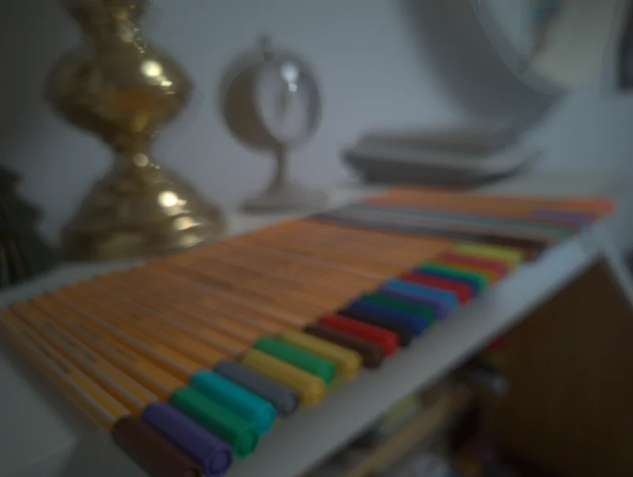

Everything important about Volkskamera – you find the same explanations in the app under gear → “?”.
The idea
Volkskamera films like an analogue movie camera. You choose a real film stock – from the cinema film of the 1890s to today’s slide film – and the app gives the picture its colours, contrast and grain. As with a real camera, every film has a fixed sensitivity; you control brightness with the shutter speed.
Filming
The large button starts and stops recording; while recording, the pause button appears next to it. Tap the viewfinder to focus there. After filming, the film is developed (progress shown in the thumbnail at the bottom right) and saved to your gallery in the folder “Movies/VolksKamera”.
The counters
FPS: frame rate of the finished film (e.g. 18 for silent-film judder, 24 for cinema). FORMAT: aspect ratio 4:3 or 16:9. LENS: switches between the phone’s cameras (wide, normal, tele). SHUTTER: shutter speed from 1/5 to 1/5000 second. Shorter times make the picture darker and movement sharper. There is deliberately no automatic mode: brightness follows only shutter speed and film – even when focusing or changing lenses. ISO / ASA: shows the fixed sensitivity of the chosen film. The app exposes the sensor exactly as the real film would have been exposed at this shutter speed – so an ISO 8 film needs a lot of light or long exposures. Tap a counter to advance it.
Recording & calibration
Under “Recording” you choose the resolution of the finished film (480p, 576p, 720p, 1080p) and whether the front camera records mirrored (also directly in the camera with the ⇋ button). With “Calibrate sensor” the app measures once how your phone processes its camera image and compensates for it before every film – the instructions there show what a good calibration scene looks like.
Every phone processes its camera image differently – with more saturation and more contrast than the sensor really sees. Volkskamera’s films are calculated for a neutral image. With calibration the app measures once how your phone changes the image and compensates for it before every film.
1. Put together objects with lots of strong colours – for example coloured pencils or felt pens – plus something white and something dark. 2. Make sure the light is even: daylight from a window is ideal, no direct backlight, no hard shadows. 3. Hold the phone steady so that the colours fill most of the picture. 4. Tap “Calibrate now”. The app takes a raw image and a normal image at the same time and compares them.


Example of a good calibration scene: many colours, one light and one dark area, even light. Left the phone’s image, right the same shot developed neutrally – calibration compensates exactly for this difference.
Combinations
Under “★ Combinations” you save film, colour filter and sound (microphone, noise, crackle, hum) under a name. With “Share” you send it to others as a short text; anyone who shares or pastes it into Volkskamera can use it.
Choosing a film
Gear → manufacturer → gauge (8, 16 or 35 mm) → film. Tapping a film shows its profile: sample image, characteristics and description. The ◐ button next to the sample image compares it with the original. The film is only applied when you tap “Use”.
Sample image
At the top of the film selection you choose the picture the films are shown on: Terrace, Fröruper Berge or a photo from your own gallery – ideally one with sky, green, red and skin tones.
Colour filters (black & white)
With black-and-white films you can put a colour filter in front of the lens, just like in the old days. It lightens its own colour and darkens the complementary colour: yellow for natural clouds, orange and red for dramatic skies, green for bright foliage. Each filter lists its Kodak Wratten number, the B+W and Hoya names and what it is used for. The filter applies to all black-and-white films until you remove it.
Editing films and your own LUTs
“Edit” opens the LUT editor: exposure, contrast, black and white point, colour temperature, saturation, colour channels and split toning. Press and hold to see the film original. You save your version as your own LUT – the film’s original LUT is always kept. You find your LUTs in the film selection under “★ My LUTs”.
Microphone
Under “Microphone” you choose the recording chain of an era – from the Edison phonograph via carbon, ribbon and valve microphones to the camcorder – sorted by decade or type, each with a profile. Controls: noise (0 = silent), noise gate against the hiss of the phone microphone, distortion, bandwidth, automatic gain. “Original sound” leaves the sound unchanged.
Crackle & hum
Crackle like an old film print. Hum like a cable problem: ground loop, loose contact, mobile-phone interference (the “dit-dit-dit”), dimmer or buzz – at 50 Hz (Europe) or 60 Hz (USA).
Sound test
Record a short voice sample (3, 5 or 8 seconds) and hear it as it will sound in the finished film. The sample is played once and not saved.
Body
Under “Body” you design your camera: material (leather, fabric, wood, metal, stone or your own photo), the metal of the fittings, the shutter button and the lettering – text, font and metal are freely selectable.
Light
The materials are rendered with light: relief, gloss and reflections. With “Light follows movement” the lamp stays fixed in the room – when you tilt or turn the phone, highlights and shadows move as on a real camera. Strength and colour of the light are adjustable. With a front-camera photo your room is reflected in the body. If it bothers you, simply switch it off; the light then comes from the top left.
App icon
Under “Body” → “App icon” you choose one of four Art Deco icons. The home screen picks it up after a few seconds; with some launchers the app has to be placed on the home screen again afterwards.
Watching films
The thumbnail at the bottom right opens the most recently developed film. From there you get to the overview of all films and to the editor, where you join several films with fades, countdown or film burn.